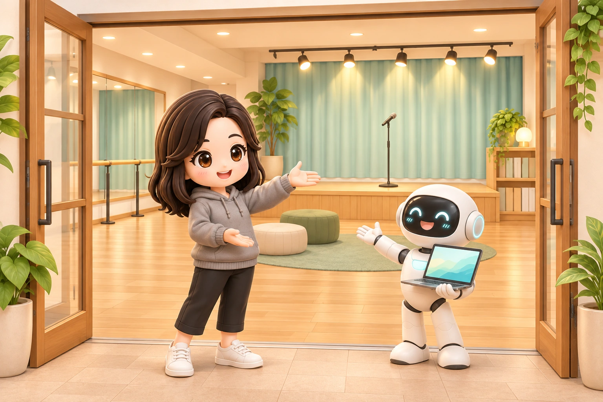
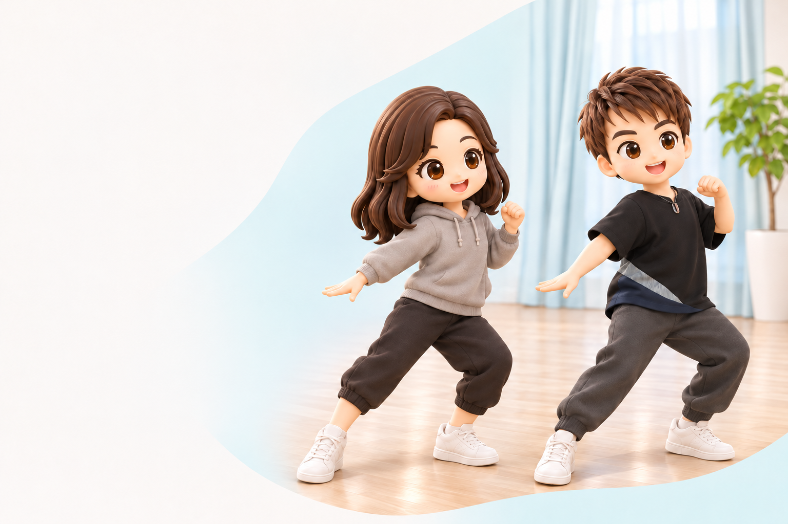

活動とつながり
AIと働くこと
音楽やダンスを楽しむこと
教室から広がる活動を
ご紹介します

AI社員とお仕事
AIを身近に
楽しみながら
AI社員が働くオフィスを作り
私とAI社員で仕事を回しています
ページづくりや
予約・顧客管理の仕組みづくり
数字の確認や改善案づくりを
AI社員にお願いしています
私はやりたいことを伝えて
できたものを確認します

自分の仕事にも
使ってみたい方へ
教室やサロンの
LINE受付・予約・顧客管理を
つくる4週間サポートも
行っています
何を頼めるのか
何から始めるのか
身近な仕事から一緒に考える
お手伝いです
課外授業のダンス部
一緒に
踊ってみない？

生徒さんの
ライブ・出演情報
教室に通う皆さんの
ライブや出演のお知らせも
こちらでご紹介していきます
次のお知らせを準備中
日程が決まり次第 掲載します
気になりましたら
お声をかけてください
AIのお手伝いについては
ナツの公式LINEへ